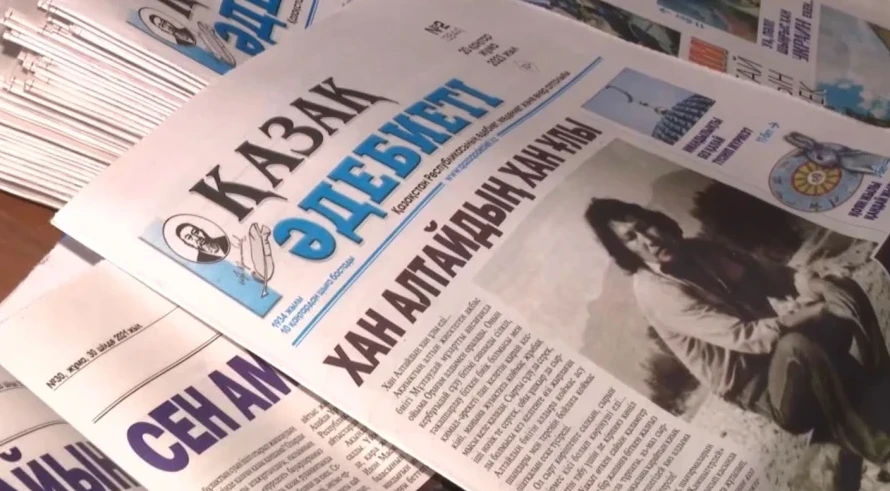
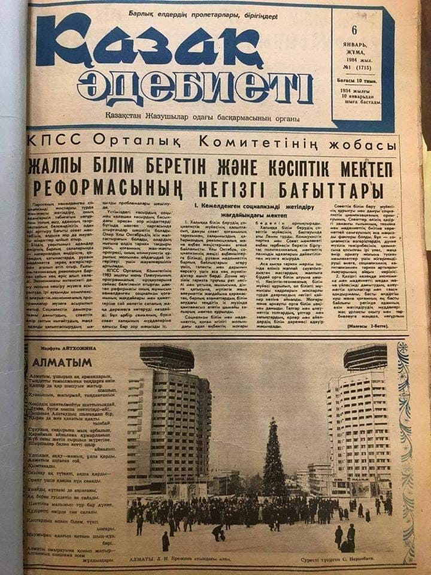
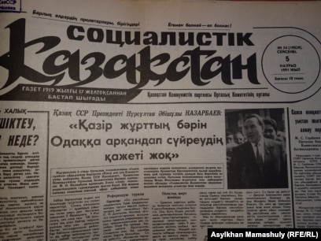

Он предотвратил закрытие газеты «Қазақ әдебиеті». «Ж.Ташенев близко общался с Г.Мусреповым, С.Мукановым,С.Мауленовым и другими литераторами. Их объединяло служение национальным интересам и тревога за судьбу народа. Когда Москва угрожала территориальной целостности и одновременно затрагивала духовные ценности казахов, Ташенев вступал в сражение на двух фронтах. Первый фронт- спор территориальный, а второй – битва в сфере мира духовного. И когда на втором фронте сгущались грозовые тучи над казахским языком, когда казахские школы приносились в жертву и поглощались русскими школами, когда многие казахскоязычные издания хором выступили в поддержку, славя и крича «ура!» этим «новациям», была объявлено решение о закрытии газеты «Казак әдебиеті», которая боролась, подобно Абылай, Касым и Кенесары ханам, защищая народные чаяния и, подобно алашордынцам, освещая дальнюю перспективу.
В 1958 году 28 июля в актовом зале ЦК КПК прошло совещание по вопросу быть или не быть газете, которая не отвечает коммунистической идеологии, не соответствует партийному курсу, подвержена веяниям, чуждым пролетарской культуре и дала крен в сторону казахского национализма. И вот на трибуну стал поднимался, едва ступая ногами, главный редактор газеты Сырбай Мауленов, подавленный враждебной атмосферой, веявшей от группы оппонентов, возглавляемых первым секретарем ЦК И.Яковлевым. Присутствующий на собрании Ташенев, полный чувств негодования к врагам «Қазақ әдебиеті», оценив ситуацию, решил подбодрить его и напутствовал Мауленова: «Не поддавайся и выступай смело!» Этим он поддержал и воодушевил Мауленова. Благодаря смелой позиции Председателя Верховного Совета республики сторонники газеты сумели удержаться и одолеть противников. Ж.Ташенев обратил внимание И.Яковлева на одно интересное обстоятельство: «Иван Дмитриевич, почему на обсуждении вопроса по проблемам казахскоязычного издания на бюро не присутствуют казахские товарищи- работники курирующего отдела ЦК?». Оказалось, что вопрос на бюро был подготовлен работниками совершенно другого отдела. Это обстоятельство неприятно удивило первого секретаря. Далее выступающий С.Баишев сравнил газету с первой казахской «националистической» газетой «Қазақ» А.Байтурсынова, а редактор «Социалистик Қазақстан» Касым Шарипов поспешил высказаться: «Надо закрыть «Қазақ әдебиеті», а другие казахские газеты надо перевести на русский язык. Если бы газету «Социалистік Қазақстан» перевели бы в «Казахстанскую Правду» и я стал бы ее редактором, то я был бы счастлив». В ответ Ж.Ташенев резко сказал: «Что ты болтаешь? Не ты открывал «Социалистік Қазақстан» и не тебе ее закрывать!».
Вот как описывает деятельность Жумеке в Южном Казахстане шымкентский журналист Е.Ашенов, персональный пенсионер. «В то время стояла проблема возвращения главной реликвии туркестанского мавзолея Х.А.Яссауи – тай казана, который хранился в фонде Эрмитажа в Санкт-Петербурге. Жумеке, объединив усилия совместно с Узбекали Жанибековым, буквально достал телефонными звонками городское руководство тогда еще Ленинграда. Тай казан был возврашен на историческую Родину. Также его заслугой является восстановление другого памятника истории - древней восточной бани, располагавшейся перед мавзолеем Х.А.Яссауи, и которая долгое время стояла заброшенной и погребенной под кучей земли».
«...В окрестностях Туркестана геологи обнаружили лечебную по своему составу воду. Узнав об этом, Жумеке отправил пробу воды на анализ в лабораторию Алматы. Вода, действительно, оказалась лечебной, наподобие минеральных вод Трускавца и Моршина, в Западной Украине. Жумеке приложил всю энергию на организацию строительства на месте источника санатория-профилактория. И в течении 3-4 месяцев был возведен профилакторий «Шуйтобе» и скоро сдан в эксплуатацию, где впоследствии он сам любил отдыхать со всей семьей».
Воспоминания о борьбе за казахские периодические издания
и реставрации исторических реликвий


